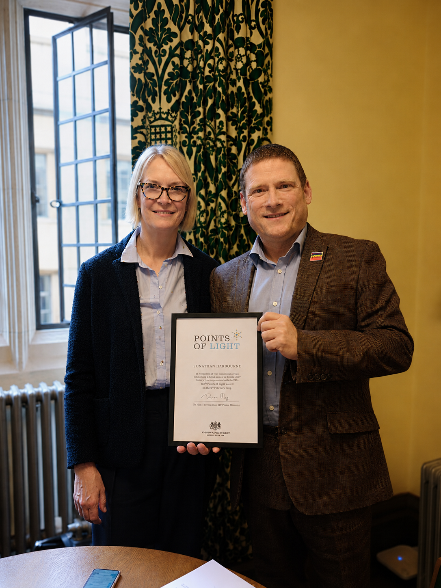
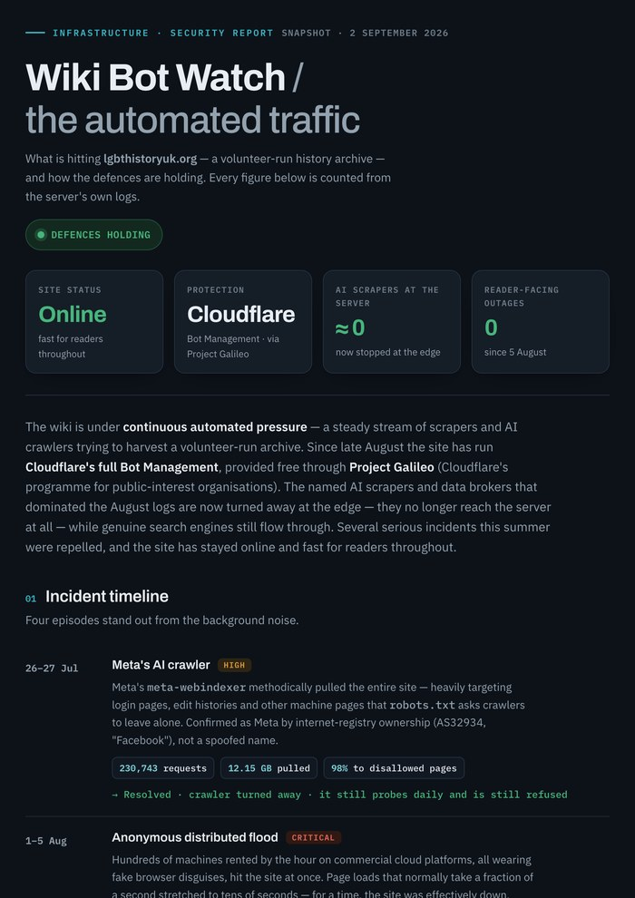
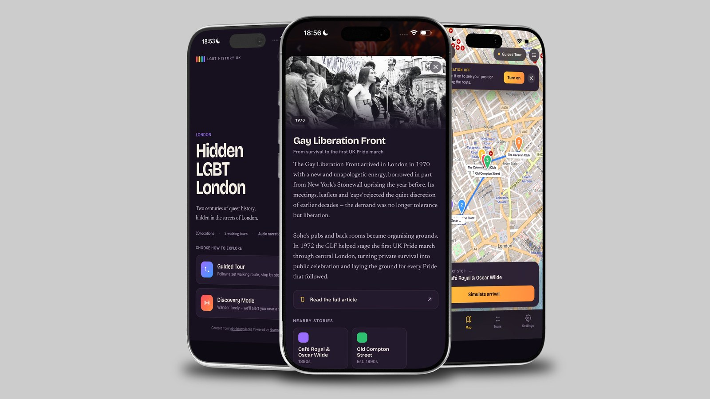
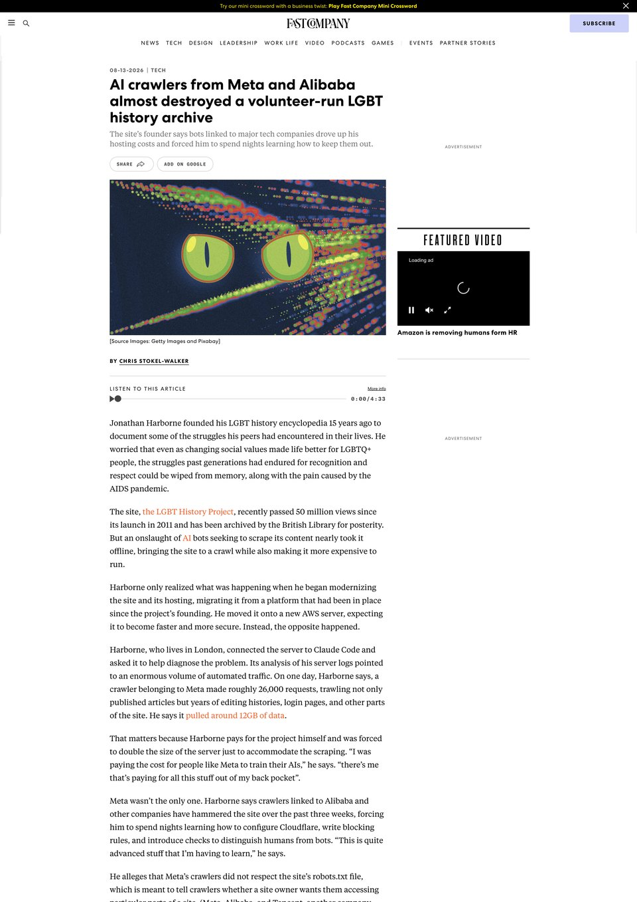

Founder · Platform owner · Community lead · Agentic AI
LGBT History Project
A volunteer-edited national encyclopaedia of LGBTQ+ history, founded in 2011, archived at the British Library, and awarded a Prime Minister’s Points of Light Award.
- MediaWiki
- PHP
- MariaDB
- nginx
- Apache
- Plesk
- Ubuntu
- AWS
- Cloudflare
- Claude
- Brevo
- PostHog

The LGBT History Project is the UK’s largest community-led archive of lesbian, gay, bisexual and trans history. I founded it in May 2011. It was archived at the British Library in October 2012, and in February 2019 I received a Prime Minister’s Points of Light Award from Rt Hon Theresa May MP in recognition of its contribution to the preservation of community memory.
The project is a volunteer-edited encyclopaedia: anyone from the community can contribute, and a network of volunteer editors governs the content. I am responsible for platform architecture, content strategy, and community governance, the infrastructure that allows volunteers to publish reliably and confidently at scale.
Over the last year I built an agentic AI reviewer that sits on the edit queue: a Claude agent that reads every new and edited article before it reaches readers, and checks it against two things at once. First, legal risk, flagging potential defamation, privacy and copyright problems. Second, the project’s own editorial policy, catching sourcing, neutrality and style breaches that a human reviewer would otherwise have to find by hand.
The agent does not publish or block on its own. It triages, explains its reasoning to the volunteer editor, and leaves the decision with a person. That is what lets a growing contributor base publish quickly without legal support behind every edit, and it is the piece of this project I would point to first.
The wiki runs on self-hosted infrastructure: MediaWiki on PHP 8.3 and MariaDB, behind nginx and Apache on Ubuntu at AWS, with Cloudflare in front. The bot management that keeps the crawlers off comes through Project Galileo, Cloudflare’s programme for public-interest projects, which is what makes enterprise-grade defence affordable for a volunteer-run archive. The archive publishes a running account of what hits it and how the defences hold: Wiki Bot Watch →
I moved the whole thing to that server with Claude Code, which wrote the migration scripts. That mattered more than the time it saved: because the migration was scripted rather than manual, I could rehearse it end to end several times, fix what broke, and run it again from clean. By cut-over day it was a procedure I had already completed successfully, not one I was attempting for the first time on a live archive.
The project now reaches well beyond the archive. Nearmark, a GPS-based LGBTQ+ heritage walking tour platform, is being built as part of the wider ecosystem, taking the archive into the physical world as a location-aware experience.



Follow the project
In the press
When AI crawlers from Meta and Alibaba hit the archive without rate-limiting, they consumed enough bandwidth to threaten the project’s hosting. Fast Company covered the incident, and the broader question of what large-scale AI data harvesting means for small, volunteer-run cultural institutions.

Community & Editorial
The project operates through a layered governance model designed for a volunteer base working without legal or institutional support.
A network of volunteer editors who govern content across the archive. The Editor’s Club sets standards, reviews disputed entries, and acts as the community’s institutional memory, giving a volunteer-edited encyclopaedia the consistency it would otherwise lack.
A published framework covering sourcing standards, notability criteria, neutrality, and the handling of living people. It gives editors a shared reference point and sets expectations for new contributors joining a project that covers politically sensitive and legally complex subject matter.
A custom Claude-powered agent that reviews new articles before publication, surfacing potential defamation, privacy, and copyright issues. With a growing volunteer base working without in-house legal counsel, the tool reduces publication risk and lets editors publish faster and with greater confidence.